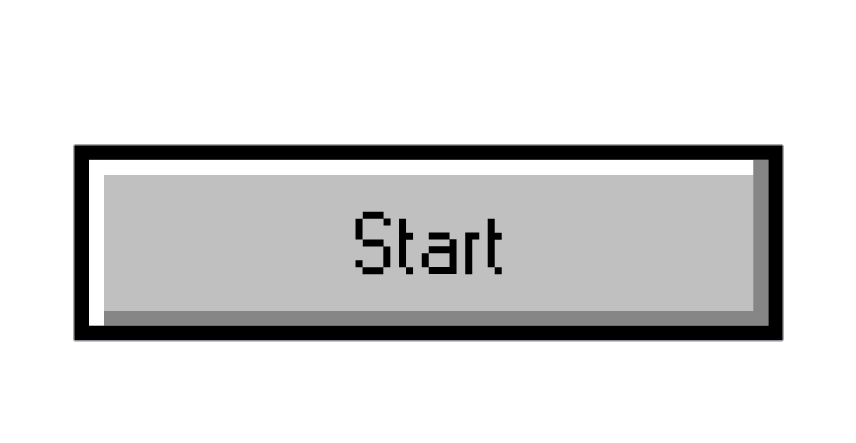

Bem vindo ao jogo Cidade limpa!
Os alagamentos muitas vezes são causados pelo acúmulo de lixo nas drenagens urbanas e as fortes chuvas nas cidades.
Nesse jogo de conscientização, você está preocupado em limpar a rua para que a sujeira não comprometa o sistema de esgoto. Sua função é colocar o lixo no cesto certo em vinte segundos.
Para te ajudar nessa jornada, aqui estão algumas dicas:
- O lixo orgânico é representado pelo cesto marrom. É o lixo vindo de resíduos orgânicos, ou seja, o que vem de plantas, animais e seres vivos no geral.
- O lixo para plástico é representado pelo cesto vermelho. É o lixo vindo de garrafas, sacos e embalagens de plástico.
- O lixo para metal é representado pelo cesto amarelo. É o lixo vindo de latas de alumínio, panelas sem cabo, tampas, arames, etc.
- O lixo para papel é representado pelo cesto azul. É o lixo vindo de jornais, revistas, caixas e embalagens de papel, por exemplo.
- O lixo para vidro é representado pelo cesto verde. É o lixo vindo de garrafas, potes ou frascos de vidro.
Jogue nosso jogo com responsabilidade e ajude o meio ambiente! Contamos com você!
